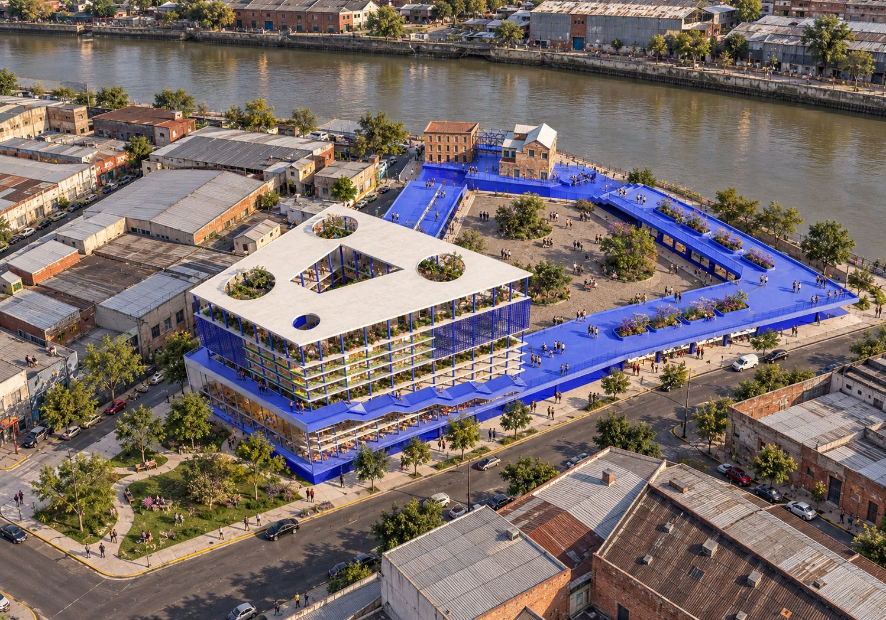
Barracas · Complejo de usos mixtos de alta complejidad
Edificio de Alta Complejidad
La planta baja se abre, el Riachuelo gana un frente nuevo y Caminito encuentra por dónde seguir.
Ver proyecto ↓Concepto
Caminito encuentra por dónde seguir
El terreno de Cerri 998 está a pocas cuadras de Caminito, justo donde el recorrido turístico y colorido de La Boca se apaga y empieza la trama industrial de Barracas: galpones, depósitos y empresas de logística que miran al Riachuelo de espaldas. El edificio se para en esa bisagra y tiende un puente entre los dos mundos.
Intención del equipo
El proyecto nace con la intención de prolongar el recorrido turístico de La Boca más allá de Caminito y llevarlo hacia Barracas a lo largo del Riachuelo. Buscamos revitalizar un borde costero hoy relegado y devolverle vida urbana, convirtiéndolo en una continuidad natural del paseo existente. Para lograrlo, el edificio libera por completo su planta baja y genera un gran vacío urbano abierto a la ciudad: una plaza pública que conecta el barrio con el río y reúne usos comerciales, gastronómicos y culturales en un mismo espacio de encuentro.
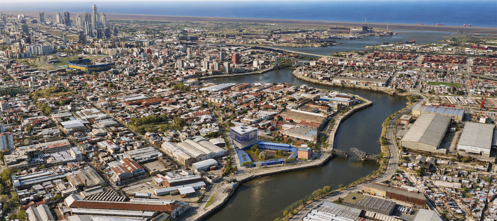
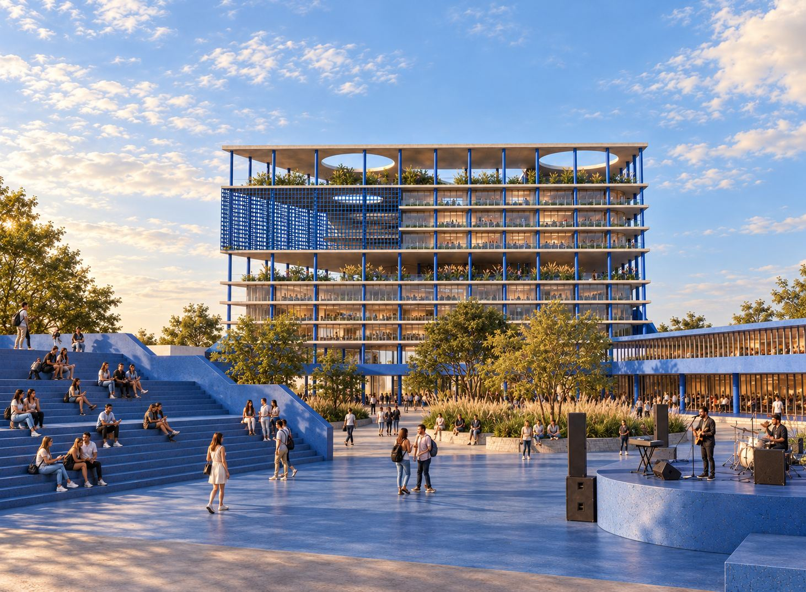
Historia
Un barrio hecho de río y trabajo
Desde el período colonial, Barracas creció de cara al Riachuelo, que funcionó como puerto natural y motor de la actividad productiva. Durante el siglo XIX, saladeros, curtiembres y depósitos ocuparon sus orillas.
Tras la epidemia de fiebre amarilla de 1871, el barrio se consolidó como polo fabril y obrero. La llegada del ferrocarril y la inmigración masiva impulsaron grandes fábricas, como Bagley y Alpargatas, junto a talleres y conventillos. Naves de ladrillo, chimeneas y puentes de hierro definieron su paisaje.
Con la desindustrialización de fines del siglo XX, muchos edificios quedaron vacíos, y hoy el barrio atraviesa un proceso de reconversión. Nuestro proyecto se apoya en esa misma historia: ocupa el lugar de un galpón industrial y, en vez de borrar esa memoria productiva, la reactiva con un uso colectivo nuevo: mercado, cultura, trabajo y vivienda donde antes hubo fábrica.
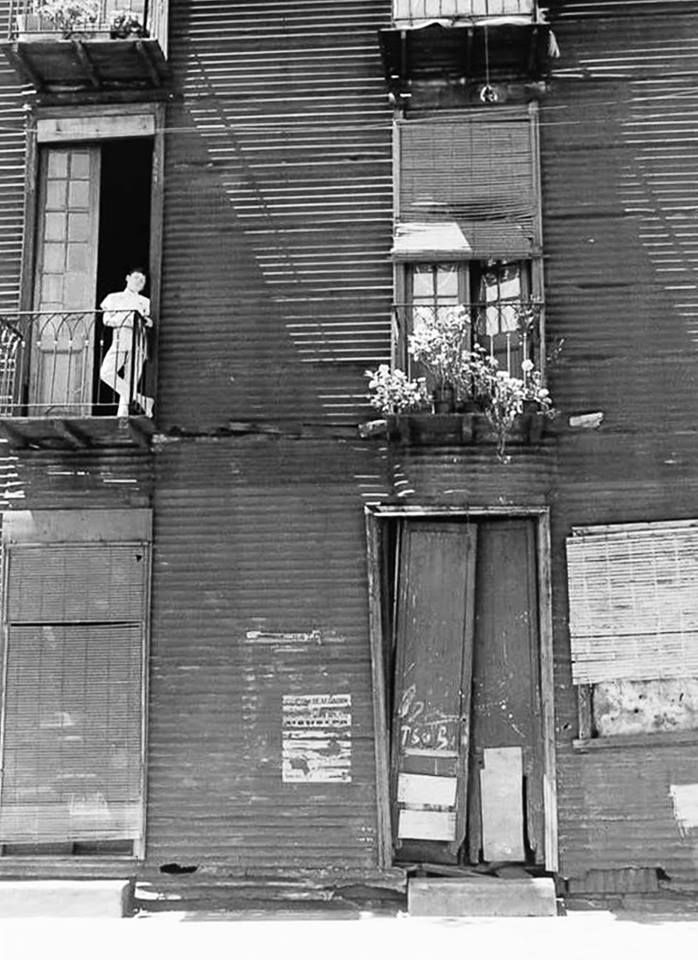
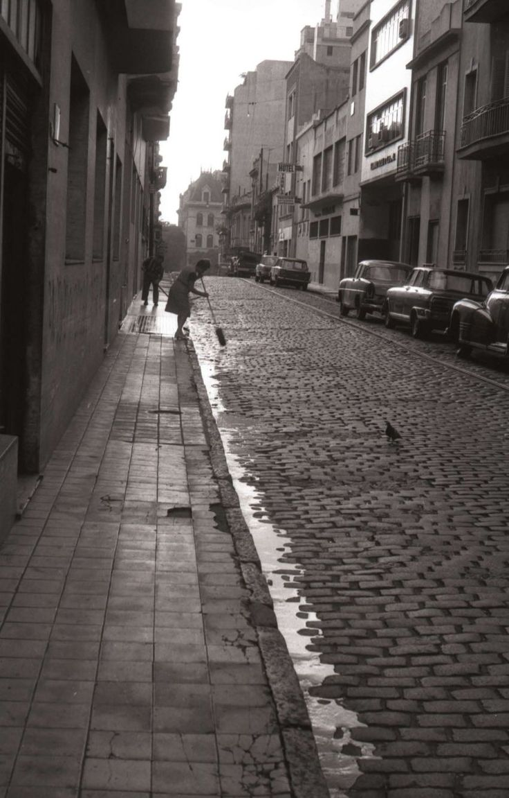
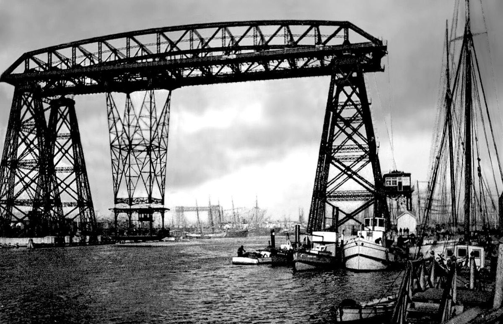
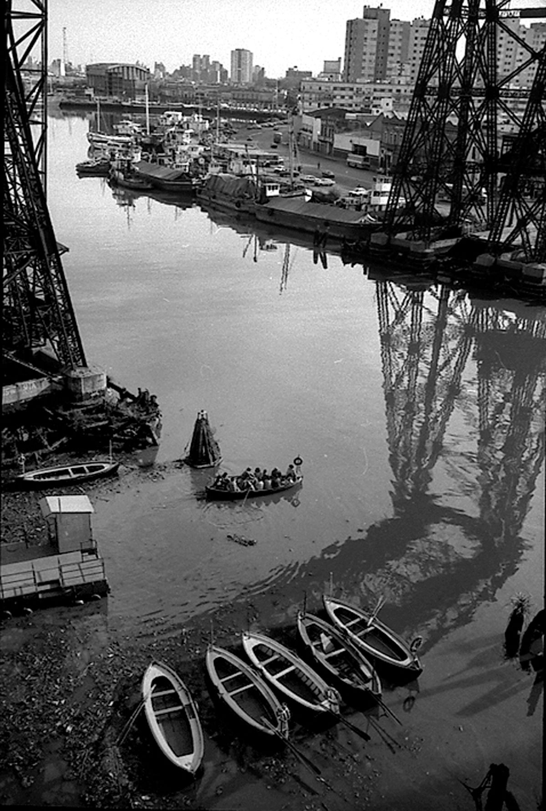
La plaza
Un vacío que lo activa todo
La planta baja libera el lote por completo y se convierte en una plaza seca: de un lado los mercados comunitarios, del otro los locales comerciales. El Complejo Barracas —patrimonio existente— se integra al recorrido, enmarcado por la estructura nueva en vez de reemplazado.
Un espacio cultural de escalinatas conduce a una tarima donde ocurren actividades al aire libre, y el hall del edificio divide la plaza principal de una segunda plaza más chica que conecta con la Plazoleta Vespucio.
De día, la plaza es mercado y paso. De noche, se vuelve escenario: la tarima se activa, los locales de la cinta sacan sus mesas hacia afuera, y el patrimonio se ilumina como memoria viva del lugar.
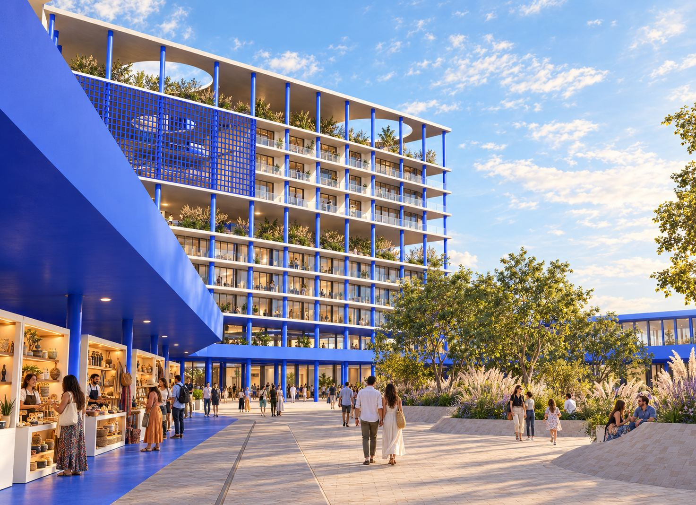
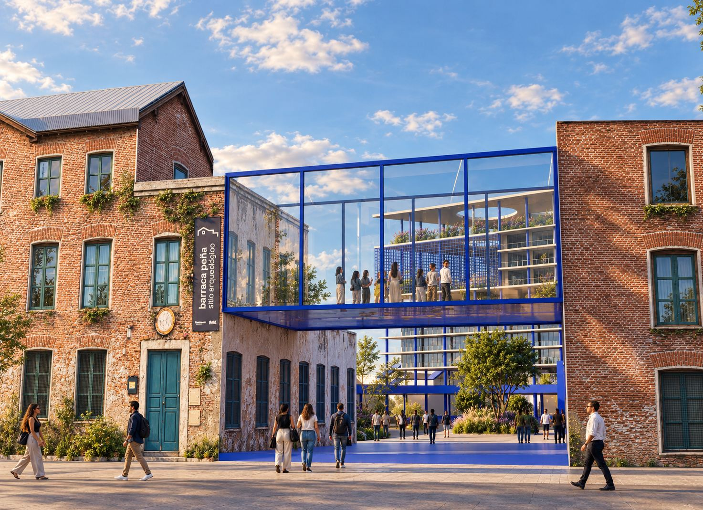
Programa
Nueve pisos, una sola lógica
El programa crece en complejidad a medida que sube: abajo, la ciudad entra sin pedir permiso; en el medio, se trabaja; arriba, se vive. En el medio de todo, una terraza pública hace de bisagra entre ambos mundos.
Pasá el mouse por un nivel (o tocalo en el celular) para ver el detalle.
De noche
El edificio no se apaga
Cuando cae el sol, la plaza se convierte en escenario: la tarima cultural se activa, los locales gastronómicos de la cinta sacan sus mesas hacia afuera y el patrimonio se ilumina como memoria viva del lugar. Entre la plaza pública, la terraza del quinto piso y las gradas que envuelven el edificio, Cerri 998 ofrece distintos lugares para quedarse: a comer, a ver una banda en vivo o simplemente a estar.
Renders nocturnos — próximamente.
Renders
Recorrer el proyecto
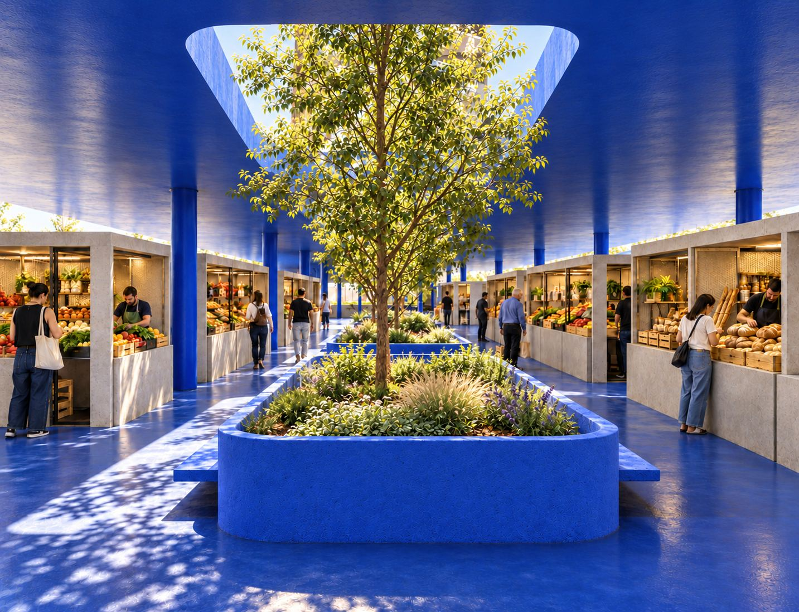
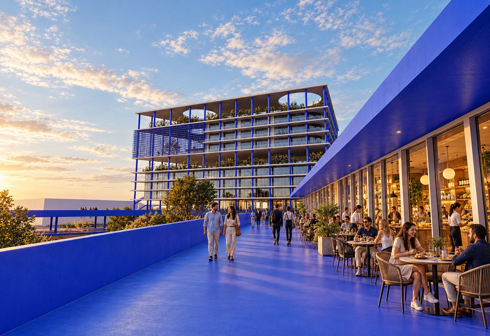
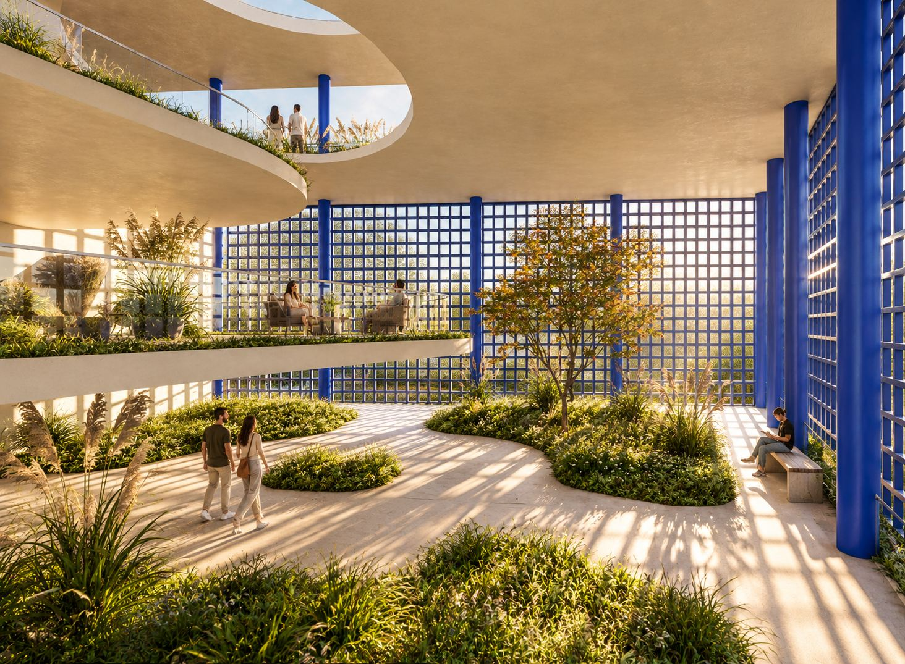
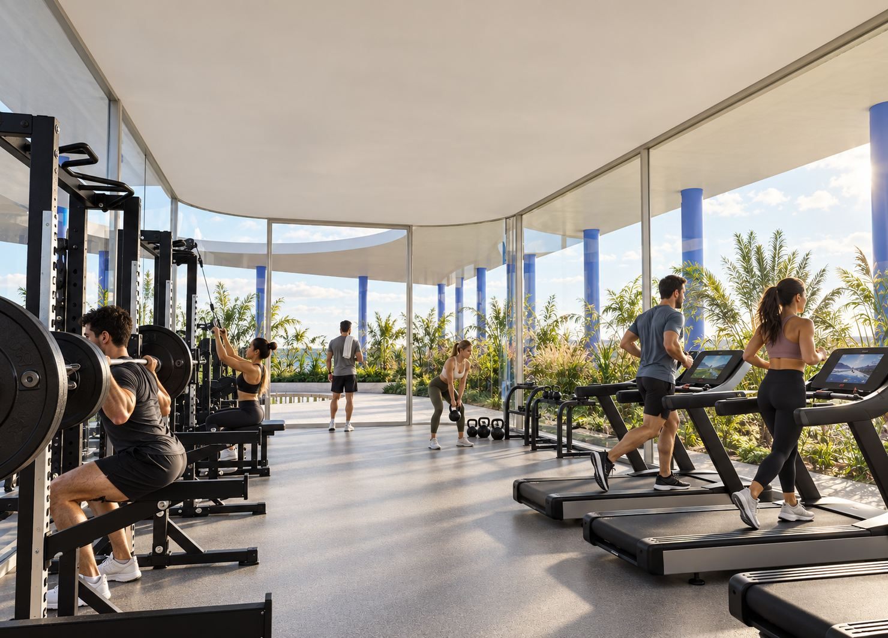
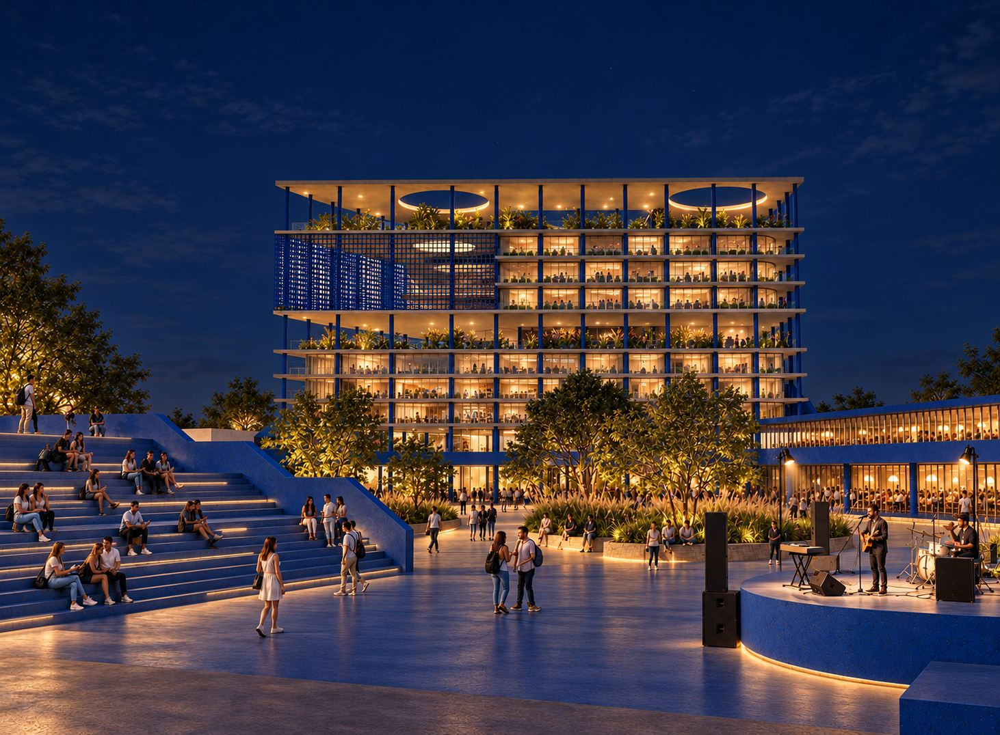
Documentación
Planos, cortes y detalle
La documentación técnica completa del proyecto: plantas por nivel, cortes generales y la axonometría, incluido el detalle constructivo de la fachada microperforada con jardinera y cielorraso técnico.
Plantas
Un PDF por nivel, en alta resolución.
Cortes
Cortes generales y corte de usos por color.
Axonometría
Volumetría general y detalle constructivo de la fachada microperforada.